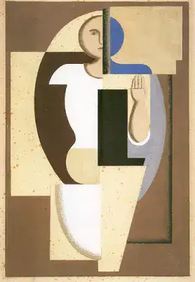

1923
Elle fait partie de la série d'œuvres de Baumeister intitulée "Formes de l'esprit", qui comprend également des peintures telles que "Esprit de la nature" et "Formes de l'esprit II". Ces œuvres sont caractérisées par des formes géométriques simples et des couleurs vives, et sont considérées comme étant influencées par les idées de l'art informel.
Willi Baumeister
Willi Baumeister
Mask 4
1936